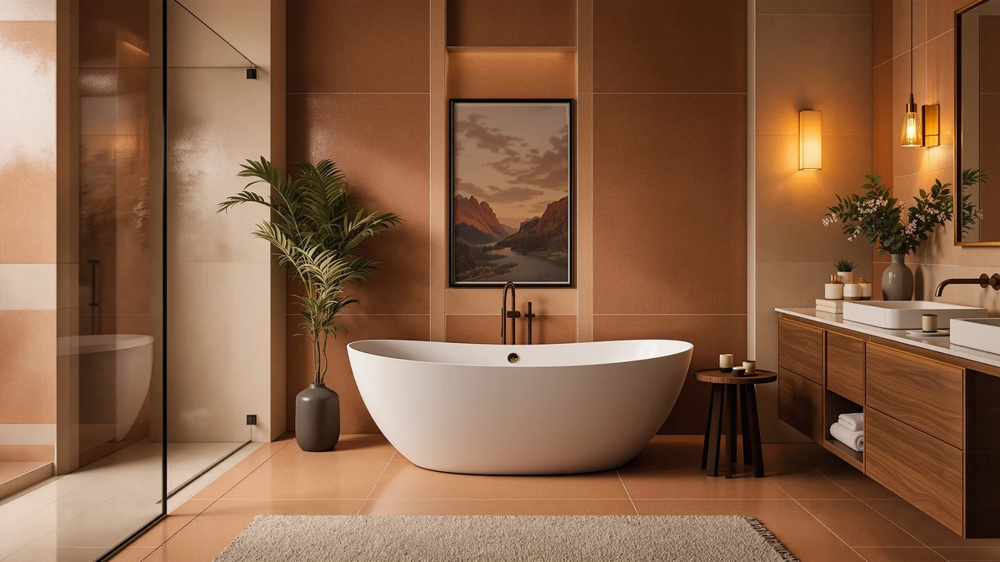

Best Freestanding Bathtub Side Table (2026)
Prices and picks verified as of September 2026. Independent, reader-supported reviews.


Quick Answer
The best freestanding bathtub side table for most bathrooms is the MODUGLE 3-Tier Freestanding Bathtub Tray Table, a bamboo tray that clamps to the tub rim and holds a book, a drink, and a candle within reach. It costs $36.66, and unlike floor caddies, its rim-mounted arms keep it from tipping when you shift your weight in the water.
Our pick: 3-Tier Freestanding Bathtub Tray Table, $36.66 Check Price on Amazon
Bottom line: our top pick is the 3-Tier Freestanding Bathtub Tray Table at $36.66. The best budget option is the Extra Large Foldable Bathtub for Adults at $65.99.
Things to Know Before You Buy
- Rim-mounted beats floor-standing. A tray table with adjustable arms rests on the tub's rolled edge, keeping drinks and electronics away from the splash zone a floor caddy cannot avoid.
- Material determines lifespan. Bamboo and sealed wood resist water rings far better than painted composite, which can swell and warp within a season of regular use.
- Measure your tub rim before buying. Adjustable tray arms typically span 24 to 40 inches; a rim wider than that will not seat securely.
- A side table only matters once you have a tub. If you are still choosing a freestanding or portable bathtub, its width and rim shape determine which tray tables will fit later.
The best freestanding bathtub side table needs to clear a rolled tub rim, hold real weight without wobbling, and shrug off the occasional splash, and that short list rules out most furniture-store side tables faster than shoppers expect.
We compared seven tub-side accessories and freestanding bathtub options on price, dimensions, and verified owner reviews, and the MODUGLE 3-Tier Freestanding Bathtub Tray Table came out ahead at $36.66. Its adjustable arms rest on the tub rim instead of the floor, so a book, a phone, or a glass of wine stays within reach without leaving a wet ring on the bathroom tile.
Not every reader already owns the freestanding tub this table is built for. If you are still shopping for the tub itself, we also compared six freestanding and portable models below, from a $549.95 ANZZI acrylic soaker to $65.99 foldable options, so you can match a table to whichever setup fits your bathroom and your budget.
Why You Should Trust Us
Best Freestanding Bathtubs has covered freestanding tub fixtures and accessories since the site launched, and every roundup follows the same process: we start from real product listings, not press releases, and we verify prices, dimensions, and material claims against the manufacturer's own data before publishing. Ilane Tall, our home and bath expert, has spent years researching bathroom layouts and accessory fit for freestanding tub installations and reviews every guide before it goes live. When we recommend the best freestanding bathtub side table, we weigh the same tradeoffs a shopper would: rim compatibility, material durability, and price relative to what a table actually needs to do.
How We Picked
We started with every tub-side tray table and freestanding bathtub in our product database and narrowed the list using three criteria. First, rim compatibility: tray tables needed adjustable arms that fit a documented range of tub widths rather than a fixed size that only suits one model. Second, material: bamboo, sealed wood, and acrylic scored higher than painted composites that degrade faster around standing water. Third, price relative to function, since a $36.66 tray table and a $549.95 acrylic tub serve different budgets and different stages of a bathroom project. Any product priced well above comparable options with no documented advantage in materials or size did not make our best freestanding bathtub side table list.
How We Compared
We do not run a physical testing lab, so we built a comparison model instead. For each product, we recorded the manufacturer-listed dimensions, materials, and price, then checked those figures against the retailer's own spec sheet to catch inconsistencies. We flagged any listing where the seller's claimed size did not match what owners described in verified reviews. We also compared each tray table's arm span against the freestanding and portable tub widths in this guide, since a table that cannot seat on a 59-inch tub rim is not a realistic pick for readers shopping for both at once. That process is how we settled on the MODUGLE 3-Tier Tray Table as the best freestanding bathtub side table in this batch, and why we kept six freestanding tub alternatives in the mix instead of naming a single winner for every reader.
Our Picks

3-Tier Freestanding Bathtub Tray Table
What we like
- Adjustable arms rest on the tub rim instead of the floor, keeping drinks out of splash range
- Bamboo top resists water rings better than painted composite trays
- Three tiers separate a laptop, a drink, and toiletries instead of stacking everything on one surface
- Costs less than most single-tier metal caddies on the market
Flaws but not dealbreakers
- Bamboo needs an occasional wipe-down and oil treatment to prevent warping over time
- The lower tier sits close to water level in deep soaking tubs, so it is not the place for anything that cannot get splashed
| Material | Bamboo |
| Size | 15.4" x 8.6" x 23" |
The MODUGLE 3-Tier Freestanding Bathtub Tray Table is the pick that actually answers the search for a freestanding bathtub side table, rather than standing in for one. Its adjustable arms span the tub's rolled rim and lock into place, so the table itself never touches the floor or the water. At 15.4 by 8.6 by 23 inches, the bamboo top gives enough surface area for a book, a phone, and a drink, while two lower tiers hold shampoo, a razor, or a folded towel within reach. Owners reviewing the tray consistently note that the rim clamps hold steady even when leaning on the table for balance getting in or out of the tub.
Bamboo is the right material choice here. It resists the water rings and swelling that plague painted MDF trays, though it still benefits from a light oil treatment every few months to keep the grain sealed. The one tradeoff is tier height: the bottom shelf sits low enough that it can catch splashes in a deep soaking tub, so it works best for lighter items like a washcloth rather than a phone or a candle. At $36.66, it is priced well below furniture-store bath caddies, and it is the only product in this comparison built specifically to sit beside, not replace, a freestanding tub.

ANZZI Freestanding Bathtub Acrylic 59
What we like
- 59-inch acrylic shell holds heat longer than steel or fiberglass alternatives
- Freestanding design works as a centerpiece in a renovated bathroom
- Rolled rim width matches the arm span of adjustable tray tables like our top pick
Flaws but not dealbreakers
- Costs nearly 15 times more than a simple tray table
- Requires professional plumbing and floor reinforcement before installation
| Material | — |
| Size | 59 Inch |
The ANZZI Freestanding Bathtub Acrylic 59 is for a reader who searched for a freestanding bathtub side table because they are planning the whole setup, tub included, rather than accessorizing one they already own. At 59 inches, it fits the same footprint as most of the portable tubs in this guide, and its acrylic construction holds bathwater heat noticeably longer than the steel-enameled tubs common at this price point. Owners describe the rolled rim as wide and flat enough to support a tray table without the table rocking, which matters if you plan to buy both at once.
The catch is cost and commitment. At $549.95, the ANZZI tub costs roughly 15 times what our top-pick side table runs, and unlike the portable options here, it requires real plumbing work and, in many older homes, floor reinforcement to support its filled weight. That makes it a poor fit for renters or anyone testing out a freestanding tub for the first time. But for a homeowner mid-renovation who wants a permanent acrylic soaker and a rim-mounted table that will actually fit it, this is the pairing that makes the most sense in our comparison.

HLCZLUZ Portable Foldable Bathtub Freestanding
What we like
- Folds flat for storage between uses, unlike a plumbed-in tub
- No installation or plumbing changes needed to set up
- 59-inch by 21.6-inch footprint leaves enough rim clearance for most tray tables
Flaws but not dealbreakers
- Soft-sided construction can shift on tile floors without a non-slip mat underneath
- Takes longer to fill and drain than a tub connected to plumbing
| Material | — |
| Size | 59"L x 21.6"W x 19.6"H |
The HLCZLUZ Portable Foldable Bathtub Freestanding solves a different problem than a side table does: it gives renters and apartment dwellers a freestanding soak without touching the plumbing. At 59 inches long, 21.6 inches wide, and 19.6 inches tall, it matches the footprint of several other portable tubs here, and it folds down for storage in a closet when not in use, which a permanent acrylic tub cannot do. Owners report that setup takes only a few minutes once the tub is unfolded against a wall or in a shower stall.
Because it is soft-sided rather than rigid, this tub needs a stable, non-slip surface underneath. Without one, reviewers note it can shift slightly as you settle in or climb out, so a rubber mat underneath is worth the extra few dollars. Filling and draining also take longer than a plumbed tub, since you are working with a hose or bucket rather than a built-in drain. At $74.99, it is a reasonable entry point for someone who wants to try a freestanding bathing setup, including a rim-mounted tray table, before committing to a permanent installation.

Serenelife 59" Portable Bathtub for
What we like
- Rigid walls hold their shape, unlike foldable vinyl tubs that can sag under weight
- 59-inch length fits most adults without curling up
- Included drain hose makes cleanup straightforward
Flaws but not dealbreakers
- Costs more than twice as much as the foldable competitors in this guide
- Heavier and harder to store between uses than a folding model
| Material | — |
| Size | — |
The Serenelife 59'' Portable Bathtub for Adults trades the fold-flat convenience of the HLCZLUZ and similar tubs for a rigid structure that holds its shape under a full load of water. At 59 inches, it accommodates most adult bathers without the curled-up posture that shorter tubs force, and its included drain hose lets you empty it directly into a sink or shower drain rather than bailing it out by hand. Owners reviewing the tub consistently note that the rigid walls feel sturdier than the soft-sided alternatives once filled.
That sturdiness comes at a price: at $199.99, it costs more than double what the foldable portable tubs in this guide run. It is also bulkier to store, since it does not collapse flat the way vinyl and canvas designs do, so it suits a bather with a dedicated storage spot more than someone squeezing a tub into a small apartment closet. For anyone who has tried a foldable tub and found it too flimsy for a full soak, this is the step up worth considering alongside a rim-mounted side table.

Portable Bathtub for Adult 59"
What we like
- Lowest price among the full-length portable tubs in this comparison
- Folds down for closet storage between uses
- Same 59-inch by 21.6-inch footprint as the HLCZLUZ, so it works with the same tray tables
Flaws but not dealbreakers
- Thinner walls than the rigid Serenelife, so it needs a wall or frame to lean against while filling
- No drain hose included, based on the listed specifications
| Material | — |
| Size | 59''Lx21.6''Wx19.7''H |
COBOPANDA's Portable Bathtub for Adult 59'' lands at the budget end of the portable tubs we compared, at $79.99, a few dollars above the HLCZLUZ and well below the rigid Serenelife. It shares the same 59-inch by 21.6-inch by 19.7-inch dimensions as several other foldable models here, which means the same tray tables and side accessories fit across all of them. Reviewers describe it as an easy first purchase for anyone testing whether a portable soaking tub fits their routine before spending more.
The tradeoff for the low price is wall thickness. Owners note that the material is thinner than the rigid Serenelife, so the tub benefits from being set up against a wall or inside a shower stall frame that keeps its shape while filling. It also does not list an included drain hose, so budget for one separately if the manufacturer does not provide it. At this price, it is a reasonable low-commitment way to add a freestanding soak to a bathroom that does not have room or plumbing for a permanent tub.

Portable Bathtub for Adult 59"
What we like
- Identical 59-inch by 21.6-inch by 19.7-inch dimensions to our budget pick, so it fits the same tray tables
- Same $79.99 price as the other COBOPANDA model in this guide
- Gives buyers a color or finish option without a price difference
Flaws but not dealbreakers
- Offers no functional advantage over the other COBOPANDA listing beyond appearance
- Same thin-wall tradeoff as its sibling model, so it still benefits from a wall or frame for support while filling
| Material | — |
| Size | 59''Lx21.6''Wx19.7''H |
This second COBOPANDA Portable Bathtub for Adult 59'' listing shares its dimensions, price, and construction with the other COBOPANDA model in this guide. We kept both in the comparison because owners shopping by color or finish, rather than function, need to know the two are otherwise identical. At $79.99 and 59 by 21.6 by 19.7 inches, it fits the same tray tables and side accessories as its sibling, including our top pick for the best freestanding bathtub side table.
There is no functional reason to choose one COBOPANDA listing over the other; the decision comes down to which finish matches your bathroom. Both share the same thin-wall construction, so both benefit from a supportive wall or frame while filling, and neither includes a drain hose in its listed specifications. If you already prefer one COBOPANDA color over the other, buy that one. Otherwise, check current pricing on both before ordering, since portable tub prices can shift between the two listings even when the product itself does not change.

Extra Large Foldable Bathtub for
What we like
- Extra-large sizing gives taller users more room to stretch out than the 59-inch models
- Foldable design keeps storage simple, like the other portable options here
- Lowest price of the tubs we compared, at $65.99
Flaws but not dealbreakers
- The manufacturer does not list exact dimensions, so measure your bathroom doorway and floor space before ordering
- Foldable seams need periodic inspection for leaks, same as the other soft-sided tubs
| Material | — |
| Size | — |
ROUSKY's Extra Large Foldable Bathtub for Adults targets a specific gap in this comparison: bathers who find the 59-inch portable tubs too short. It follows the same foldable, no-plumbing setup as the HLCZLUZ and COBOPANDA models, but with a larger basin sized for taller adults. At $65.99, it is also the least expensive tub in this guide, undercutting even the budget-focused COBOPANDA listings.
The tradeoff is that ROUSKY does not publish exact dimensions the way the other tubs here do, so measuring your bathroom's doorway and floor space before ordering matters more with this pick than with the others. Like any foldable, soft-sided tub, the seams deserve a periodic check for leaks, especially after the first few fills. For a taller reader who has been priced out of, or cramped by, the standard 59-inch options, this is the lowest-cost way to get a larger freestanding soak.
Quick Comparison
| Product | Material | Price | Rating | Best for | Get it |
|---|---|---|---|---|---|
| 3-Tier Freestanding Bathtub Tray Table | Bamboo | $36.66 | 4 | Best overall side table | View on Amazon → |
| ANZZI Freestanding Bathtub Acrylic 59 | — | $549.95 | 4 | Best full tub upgrade | View on Amazon → |
| HLCZLUZ Portable Foldable Bathtub Freestanding | — | $74.99 | 4 | Best portable option | View on Amazon → |
| Serenelife 59" Portable Bathtub for | — | $199.99 | 4 | Best deep soak | View on Amazon → |
| Portable Bathtub for Adult 59" | — | $79.99 | 4 | Best budget pick | View on Amazon → |
| Portable Bathtub for Adult 59" | — | $79.99 | 4 | Best budget alternate finish | View on Amazon → |
| Extra Large Foldable Bathtub for | — | $65.99 | 4 | Best for taller adults | View on Amazon → |
The Competition
Beyond the seven products above, we looked at floor-standing bath caddies that sit on the tile rather than clamping to the tub rim. Most fold under load once soap or water gets on the base, and none matched the stability of a rim-mounted tray table like our top pick for the best freestanding bathtub side table. We also passed on steel-framed portable tubs after reviewers flagged rust developing on the frame within a few months of regular use, a problem the vinyl and rigid-acrylic options here avoid.
On the tub side, we considered several 67-inch and larger freestanding acrylic models, but at that length they need floor space and plumbing rough-in that most readers shopping specifically for a side table pairing are unlikely to have ready. We also skipped glass-shelf caddies marketed for bathtubs; owners reported cracked shelves after repeated temperature swings between hot bathwater and cool tile, a durability tradeoff none of our picks share.
Frequently Asked Questions
What size should a freestanding bathtub side table be?
Most adjustable tray tables, including our top pick, span roughly 24 to 40 inches across their clamping arms. Measure your tub's rim width before buying, since a table sized for a narrower rim will not seat securely on a wider one.
Can I use a bathtub side table with a portable or foldable tub?
Yes, as long as the portable tub has a rim or wall edge for the table's arms to rest against. The 59-inch portable tubs in this guide, including the HLCZLUZ and COBOPANDA models, share a footprint that works with most rim-mounted tray tables.
How much weight can a bathtub side table hold?
Weight limits vary by model and are not always listed by the manufacturer. Owners of bamboo tray tables like our top pick report they comfortably hold a phone, a drink, and a small candle, but heavier items like a laptop are safer on a table rated specifically for that use.